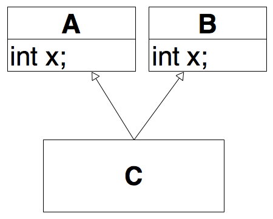
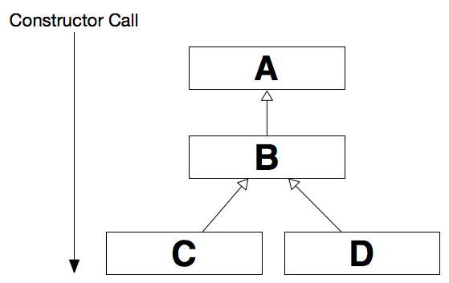
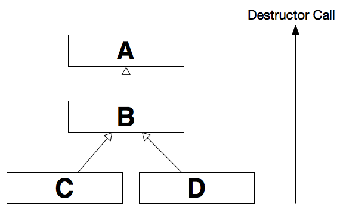

C is derived from
B , and
B is derived from
A , then
C
inherits the members declared in
B and
ACommon functionality should be in a base class!
class Article {
private:
string m_number;
string m_title;
double m_price;
public:
Article() { ... }
string getNumber() const { return m_number; }
string getTitle() const { return m_title; }
double getPrice() const { return m_price; }
};
Adds special functionality for specific use cases
class Book: public Article { // Book is derived from Article
private:
string m_author;
string m_publisher;
double m_isbn;
public:
Book() { ... }
string getAuthor() const { return m_author; }
string getPublisher() const { return m_publisher; }
string getIsbn() const { return m_isbn; }
};
Class Book inherits all features of
Article
Book book; book.getAuthor(); book.getPublisher(); book.getIsbn(); // Method from super class book.getNumber(); book.getTitle(); book.getPrice();
Base class may be provided with an access specifier
class Derived: public Base { ... };
class Derived: protected Base { ... };
class Derived: private Base { ... };
class Derived: Base { ... };
Base for the children of
DerivedBase preserve meaning
Base become protected (visible for subclasses)
Base become private (default)
class Book : Article {};
book.getAuthor(); // Compiler error
class Book : protected Article {};
book.getAuthor(); // Compiler error
class Book : private Article {};
book.getAuthor(); // Compiler error
class Book: public Article {
public:
Book(string number, string title, double price, string author, string publisher, string isbn)
: Article(number, title, price), m_author(author), m_publisher(publisher), m_isbn(isbn) {}
};
In C++ a class may have multiple parents
class Derived : public Base1, public Base2{
...
};
Derived inherits from
Base1 and
Base2Name clashes have to be resolved by qualification
C with scope operator
(A::x, B::x)class Book: public Article {}
class Cd: public Article {}
class BookCD: public Book, public Cd {}
BookCD bookCD;
bookCD.getPrice(); // Ambiguous
bookCD.Book::getPrice();
bookCD.Cd::getPrice();
Class BookCD contains two separate subobjects of
Article
Method getPrice(); is available in both super classes
class Book: public virtual Article {}
class Cd: public virtual Article {}
class BookCD: public Book, public Cd {}
BookCD bookCD;
bookCD.getPrice(); // Unambiguous
Specifier virtual lets corresponding subobjects be merged to one
void printArticle(Article* a) {
cout << a->getTitle();
}
Article* pArticle = new Article("100", "Article1", 9.90);
Book* pBook = new Book("200", "C++", 24.90, "Stroustrup", "", "1-23");
printArticle(pArticle);
printArticle(pBook);
Article* pArticle; // Static type "Article" Book* pBook; // Static type "Book" Article* pArticle = new Book(); // Static type "Article", dynamic type "Book"
A polymorph variable (class needs a virtual function) may refer to objects of the static type or of any subclass
Article* pArticle = new Article("100", "Article1", 9.90);
Book* pBook = new Book("200", "C++", 24.90, "Stroustrup", "", "1-23");
pArticle->setTitle("Basic Article"); // ok
pBook->setPublisher("Addison-Wesley"); // ok
pArticle = pBook;
pArticle->setPublisher("dpunkt"); // compiler error
pArticle->setPrice(29.90); // ok
A pointer variable of a subclass type can always be assigned to a pointer variable of the baseclass
Article* pArticle;
Book* pBook = new Book("123", "C++", 24.90, "Stroustrup", "", "1-23");
pArticle = pBook; // ok
pBook = pArticle; // error
pBook = dynamic_cast<Book*>(pArticle); // ok
Book (or subclass), If yes, it returns a pointer of type
Book* to the object; if not, a
NULL pointer is returned
Generic methods can operate on arguments of multiple dynamic types
void printInfo(Article* a) {
cout << "Article " << a->getTitle();
cout << " (" << a->getNumber() << "); ";
cout << a->getPrice() << " Euro" << endl;
}
Book* pBook = new Book(...);
Cd* pCd = new Cd(...);
printInfo(pBook);
printInfo(pCd);
Generic containers can contain elements of multiple dynamic types
class ShoppingCart {
...
void add(Article* a);
Article* getArticle(int index);
};
ShoppingCart cart(...);
Book* pBook = new Book(...);
C* pCd = new Cd(...);
cart.add(pBook);
cart.add(pCd);
Article* article = cart.getArticle(0); // may be book or Cd
class Article{
public:
void printInfo(){
cout << "Article: " << m_title;
}
};
class Book: public Article{
public:
void printInfo(){
cout << "Book: " << m_title << "|" << m_author;
}
};
void main(){
Book* pBook = new Book("123", "C++", 24.90, "Stroutrup", "", "1-23");
Article* pArticle = pBook;
pArticle->printInfo(); // what is printed out?
}
object->Base::func(...)class Article{
public:
virtual void printInfo(){
cout << "Article: " << m_title;
}
};
class Book: public Article{
public:
void printInfo(){
cout << "Book: " << m_title << "|" << m_author;
}
};
void main(){
Book* pBook = new Book("123", "C++", 24.90, "Stroutrup", "", "1-23");
Article* pArticle = pBook;
pArticle->printInfo(); // what is printed out?
}
class ShoppingCart {
private:
int _number;
Article* _articles[10];
public:
void add(Article* a){...}
void printArticles(){
for(int i = 0; i<_number;i++){
_articles[i]->printInfo();
}
}
};
ShoppingCart cart(...);
Book* pBook = new Book(...); cart.add(pBook);
C* pCd = new Cd(...); cart.add(pCd);
cart.printArticles();
class Base {
virtual ~Base() { ... }
};
Base* object = new Derived();
delete object; // Derived::~Derived() is called
virtual void draw() = 0;class GraphicObjects{
public:
virtual void draw() = 0;
};
class Rectangle : public GraphicObject{
public:
virtual void draw(){
...
}
};
GraphicObject* pGraphicObject = new GraphicObject(); // Compiler error
GraphicObject* pGraphicObject = new Rectangle();
pGraphicObject->draw();
Java
public interface Serializable{
void writeObject(ObjectOutputStream out);
void readObject(ObjectInputStream in);
}
C++
class Serializable{
virtual void writeObject(ObjectOutputStream &out) = 0;
virtual void readObject(ObjectInputStream &in) = 0;
};
class Rectangle : public Serializable {
virtual void writeObject(ObjectOutputStream &out) {
out << _x << _y << _width << _height;
}
virtual void readObject(ObjectInputStream &in) {
in >> _x >> _y >> _width >> _height;
}
};
class Triangle : public Serializable {
virtual void writeObject(ObjectOutputStream &out) {
out << p1.x << p1.y << p2.x << p2.y << p3.x << p3.y;
}
virtual void readObject(ObjectInputStream &in) {
in >> p1.x >> p1.y >> p2.x >> p2.y >> p3.x >> p3.y;
}
};
class SaveToFileOperation{
private:
vector<Serializable*> _serializeAbleObjects;
public:
void save(string filename){
ObjectOutputStream out; // get output stream
for(int i = 0; i < _serializeAbleObjects.size(); i++){
_serializeAbleObjects.at(i)->writeObject(out);
}
}
};
Structs are very similar to classes
struct Rectangle : GraphicsObject{
// Members are public
int _x;
int _y;
};
class Rectangle : GraphicsObject{
// Members are private
int _x;
int _y;
};
Constructors are called from the top to bottom
Destructor are called from the bottom to top
/